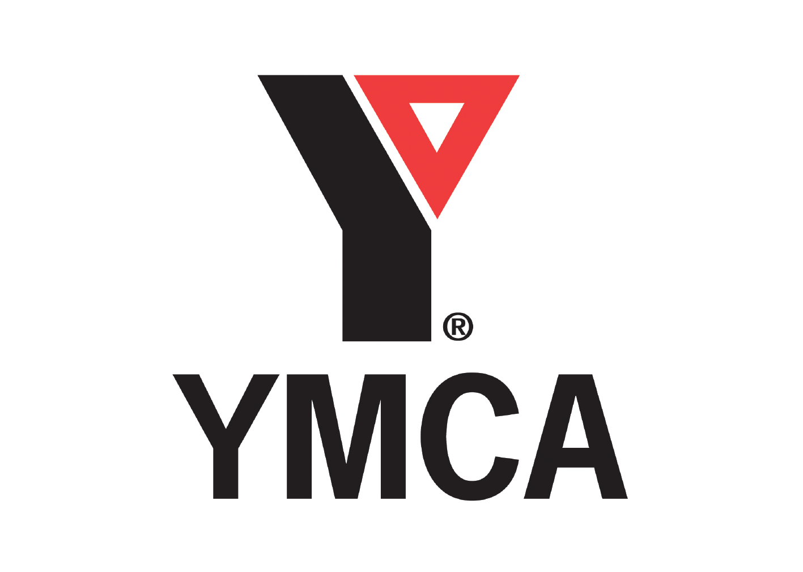

YMCA of Greater Pittsburgh
Team
- Jake Bittner
- Eric Chow
- Abdusamed Sherif
- Glen Wise
Opportunity
The YMCA deals with the difficulties that come with logging and managing data by pen and paper. Being able to log this information with tablets or phones, the fragility of paper wouldn’t need to be worried about. Whether misplaced or tardy, the YMCA ends up missing grant funding without the proper reporting. Not having the pressure of misplacing these papers can be hugely beneficial and reduce major inefficiencies in this manual form of “data transfer.”
Outcomes
With the completed attendance-tracking application, users of this system can successfully import program information, create and complete attendance sheets for each program, and generate reports on these sheets. YMCA members can use these reports to see how many kids attended each site, when they were signed in/out, and what snacks they received during the program. Additional features include one-click sign-in or sign-out, any-date attendance sheet generation, customized reports according to before-school, after-school, or summer programs, and reports that can range from any two dates selected. These new reports were designed according to the recommendations of Deborah Pricener and Jennifer Bouchard who will use these for data analysis of the programs.
Deliverables
We’ve delivered a full-stack Ruby on Rails application that is deployed using a Digital Ocean server. In addition, we’ve supplied admin credentials, procedures on transferring ownership to their personal Digital Ocean account, and an extended user guide found on the system.